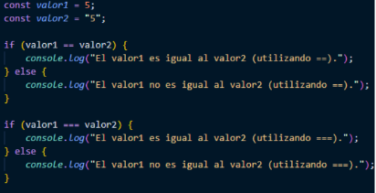

DESARROLLO DE APLICACIONES CON TECNOLOGÍAS WEB

Escribe un programa que solicite al usuario ingresar un número y determine si es mayor o menor que 0, o cero. El programa debe mostrar un mensaje indicando el resultado.
Por ejemplo:
El número 2 es mayor que 0.
Escribe un programa que solicite al usuario ingresar su calificación en un examen (un número entre 0 y 10). El programa debe mostrar un mensaje indicando si el usuario aprobó o suspendió el examen.
El examen se considera aprobado si es mayor o igual que 5. Si el número ingresado es menor que 0, muestra un mensaje de error.
Escribe un programa que solicite al usuario ingresar un número y determine si es par o impar. El programa debe mostrar un mensaje indicando si el número es par o impar. Utiliza sentencias if/else para realizar el ejercicio.
Crea un programa que solicite al usuario un número entero y muestre por pantalla si ese
número es par y positivo.
En caso contrario debe indicar si es negativo, impar o ambos.
Crea un programa que solicite al usuario dos valores enteros, los compare y muestre por pantalla si uno es mayor que el otro o si son iguales.
Ejemplo: El número 5 es mayor que 2.
Crea un programa que solicite al usuario un número entero y haga lo siguiente: Si el número es positivo lo debe convertir a negativo y si es negativo lo debe convertir a positivo.
Crea un programa que solicite al usuario su peso en kilos y su altura en centímetros y calcule el IMC (peso / altura2).
Debe mostrar el resultado y luego hacer el diagnóstico:
Crea un programa que solicite al usuario un dorsal de jugador y haga lo siguiente: comprobar que ese número está entre 0 y 99.
Si no lo está, entonces el programa debe terminar con un mensaje de error.
Si el número está entre 0 y 99 el programa debe mostrar un texto con la posición que corresponde a cada dorsal:
Crea un programa que solicite al usuario una cantidad monetaria y un carácter d, l, y (dólar, libra, yen).
Según el carácter introducido por el usuario el programa debe convertir la cantidad monetaria (que serán euros) a la moneda correspondiente. No es preciso que el tipo de cambio sea real.
Investiga y explica la diferencia entre los operadores de igualdad == y === en JavaScript.
¿Cuál será el resultado de los dos condicionales?
R. La diferencia entre los operadores de comparación "==" y "===" es que el "==" solo verifica la igualdad de las expresiones sin tener en cuenta el tipo de dato como por ejemplo "string","booleano" o "number" y en cambio el "===" verfica si ambas expresiones son exactamente iguales.
¿Cómo mejorarías este ejercicio visto en clase?
Escribe un programa que solicite un número un mes del año y muestre el número de días que tiene. En caso de introducir un mes desconocido, mostrar un mensaje de advertencia.